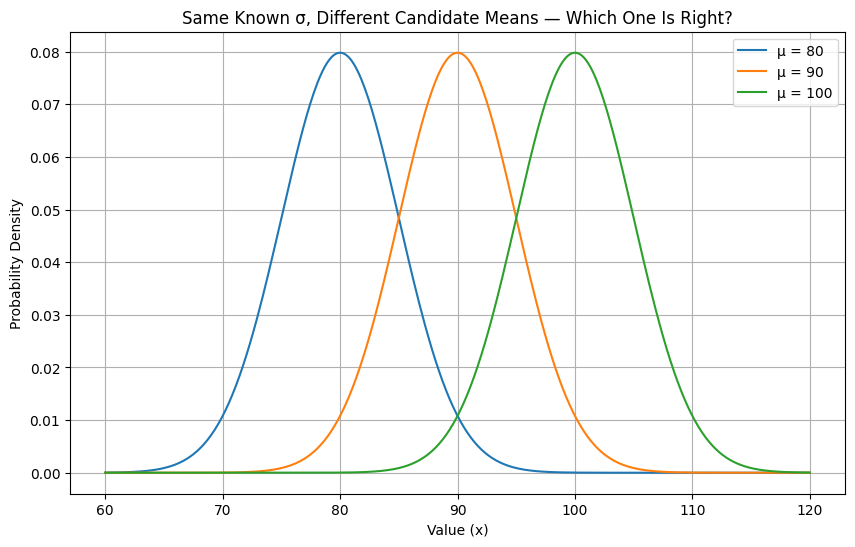
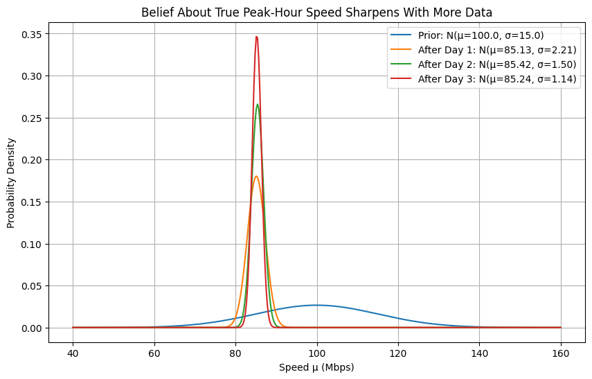

The Normal-Normal conjugate is the last piece we need before structural time series models like CausalImpact make sense. Every time a local-level model rolls forward one time step, it is quietly doing a Normal-Normal update: yesterday’s belief about the level acts as the prior, today’s noisy observation acts as the data, and the two combine into an updated belief.
Unlike the Gamma-Poisson pair (estimating a rate) or the Normal-Inverse Gamma pair (estimating a variance), the Normal-Normal pair estimates a mean and it does so under one assumption: the variance is already known
13.1 Normal Distribution: Known Variance, Unknown Mean
The Normal distribution is defined by two parameters, the mean μ and the variance σ²:
For this conjugate pair, we treat σ² as known (maybe it comes from a spec sheet, a long history of measurements, or a calibrated instrument) and treat μ as the unknown we’re trying to learn. That’s the opposite split from the Normal-Inverse Gamma notebook, where the mean was known and the variance was the mystery.
Below are three Normal curves with the same known σ but different possible means. We know roughly what family the truth belongs to, we just don’t know which μ is correct.
Code
import numpy as npimport matplotlib.pyplot as pltfrom scipy.stats import norm# Same known sigma, three candidate meanssigma =5candidate_mus = [80, 90, 100]x = np.linspace(60, 120, 400)plt.figure(figsize=(10, 6))for mu in candidate_mus: plt.plot(x, norm.pdf(x, loc=mu, scale=sigma), label=f'μ = {mu}')plt.title("Same Known σ, Different Candidate Means — Which One Is Right?")plt.xlabel("Value (x)")plt.ylabel("Probability Density")plt.legend()plt.grid(True)plt.show()

13.1.1 How Fast Is Your Internet, Really?
Your ISP advertises 100 Mbps download speed on your plan. You’ve always wondered whether you actually get that, especially during peak hours when demand is highest.
You know from the router manufacturer’s published specs that any single speed test has a measurement noise of σ = 5 Mbps. That part is known and fixed.
What you don’t know is μ: the true average speed your connection delivers during peak hours. So one evening, you run 5 back-to-back speed tests:
\[82,\ 90,\ 85,\ 88,\ 79 \text{ Mbps}\]
import numpy as npdata_day1 = np.array([82, 90, 85, 88, 79])n =len(data_day1)total = data_day1.sum()xbar = data_day1.mean()print(f"n = {n}")print(f"sum of observations = {total}")print(f"sample mean x̄ = {xbar:.2f} Mbps")
n = 5
sum of observations = 424
sample mean x̄ = 84.80 Mbps
13.1.2 How Do We Use a Normal Distribution as a Prior for μ?
μ is a real-valued quantity that can sit anywhere in a range around some expectation - it’s not restricted to positive values like a rate or a variance. That symmetric shape is what the Normal distribution offers making it a conjugate prior for a Normal mean.
Before running any tests, your prior belief is anchored on the advertised speed, but you allow for real uncertainty since “advertised” and “actual” rarely match exactly:
\[\mu \sim N(\mu_0 = 100,\ \sigma_0^2 = 15^2)\]
A prior standard deviation of 15 Mbps says you wouldn’t be shocked if your true peak-hour speed turned out to be anywhere roughly between 70 and 130 Mbps (\(\mu\pm2\sigma\)), vague enough to let the data speak.
13.1.3 Updating with Data: The Normal-Normal Shortcut
Just as Gamma is conjugate to a Poisson likelihood, and Inverse Gamma is conjugate to a Normal’s variance, a Normal prior is conjugate to a Normal likelihood’s mean (when σ² is known). This gives us a closed-form posterior with no integral required.
The cleanest way to see the update is in terms of precision (1 / variance). Precision from the prior and precision from the data simply add together:
Notice how much the data dominates here: the data’s precision (\(n\tau = 0.2\)) is nearly 45× larger than the prior’s precision (\(\tau_0 = 0.0044\)), so the posterior mean lands almost exactly on the sample mean (84.8) rather than the advertised 100.
Code
import numpy as npimport matplotlib.pyplot as pltfrom scipy.stats import normsigma =5# known measurement noise (std)sigma2 = sigma **2mu_prior =100sigma_prior =15sigma2_prior = sigma_prior **2n =len(data_day1)total = data_day1.sum()# Conjugate update, in terms of precision (tau)tau0 =1/ sigma2_prior # prior precisiontau =1/ sigma2 # per-observation data precisiontau_n = tau0 + n * tau # posterior precisionmu_post = (tau0 * mu_prior + tau * total) / tau_nsigma2_post =1/ tau_nsigma_post = sigma2_post **0.5x = np.linspace(40, 160, 400)pdf_prior = norm.pdf(x, loc=mu_prior, scale=sigma_prior)pdf_post = norm.pdf(x, loc=mu_post, scale=sigma_post)plt.figure(figsize=(10, 6))plt.plot(x, pdf_prior, label=f'Prior: N(μ={mu_prior}, σ={sigma_prior:.2f})')plt.plot(x, pdf_post, label=f'Posterior: N(μ={mu_post:.2f}, σ={sigma_post:.2f})')plt.title("Prior and Posterior Beliefs About True Peak-Hour Speed")plt.xlabel("Speed μ (Mbps)")plt.ylabel("Probability Density")plt.legend()plt.grid(True)plt.show()print(f"Posterior precision (τ_n): {tau_n:.4f}")print(f"Posterior mean: {mu_post:.2f} Mbps")print(f"Posterior sd: {sigma_post:.2f} Mbps")
Two things moved in that plot: the posterior shifted left, away from the advertised 100 Mbps and toward what the tests actually showed, and it got much narrower, because five real observations with a small known noise term (σ = 5) are far more informative than a vague prior guess. You’re now fairly confident your real peak-hour speed sits close to 85 Mbps, not the 100 Mbps on the box.
13.1.4 Sequential Updating: More Tests, More Days
As with the earlier conjugate pairs, the posterior from today becomes the prior for tomorrow. Say you keep testing on two more evenings:
day
tests
readings (Mbps)
1
5
82, 90, 85, 88, 79
2
6
86, 83, 87, 84, 89, 85
3
8
84, 86, 85, 83, 87, 85, 84, 86
Each day’s posterior rolls forward into the next day’s prior.
Code
import numpy as npimport matplotlib.pyplot as pltfrom scipy.stats import normbatches = [ np.array([82, 90, 85, 88, 79]), # Day 1 np.array([86, 83, 87, 84, 89, 85]), # Day 2 np.array([84, 86, 85, 83, 87, 85, 84, 86]), # Day 3]mu_prior, sigma2_prior =100.0, 15.0**2# start from the original priorx = np.linspace(40, 160, 400)plt.figure(figsize=(10, 6))plt.plot(x, norm.pdf(x, loc=mu_prior, scale=sigma2_prior **0.5), label=f'Prior: N(μ={mu_prior:.1f}, σ={sigma2_prior**0.5:.1f})')for i, batch inenumerate(batches, start=1): n =len(batch) total = batch.sum() tau0 =1/ sigma2_prior # prior precision tau =1/ sigma2 # per-observation data precision tau_n = tau0 + n * tau # posterior precision mu_post = (tau0 * mu_prior + tau * total) / tau_n sigma2_post =1/ tau_n plt.plot(x, norm.pdf(x, loc=mu_post, scale=sigma2_post **0.5), label=f'After Day {i}: N(μ={mu_post:.2f}, σ={sigma2_post**0.5:.2f})')# today's posterior becomes tomorrow's prior mu_prior, sigma2_prior = mu_post, sigma2_postplt.title("Belief About True Peak-Hour Speed Sharpens With More Data")plt.xlabel("Speed μ (Mbps)")plt.ylabel("Probability Density")plt.legend()plt.grid(True)plt.show()

After three days of testing, the posterior has tightened from a 15 Mbps prior standard deviation down to just over 1 Mbps, and it has settled around 85 Mbps and you now have strong grounds to believe your real peak-hour speed runs about 15 Mbps under what’s advertised, not just a hunch from one bad test.
Time to change service providers?
13.1.5 Key Takeaways
The Normal-Normal conjugate pair is used to find an unknown mean when the variance is known.
It applies whenever the quantity you’re estimating is real-valued and roughly symmetric (eg: speed,temperature,score, level) and not restricted to positive values like a rate or a variance
The update is cleanest expressed in precision (1/variance): posterior precision is simply prior precision plus data precision
Whichever source is more precise - prior or data - pulls the posterior mean harder toward it. With enough data, the prior’s influence fades out almost entirely
As with Gamma-Poisson and Normal-Inverse Gamma, the posterior stays in the same family as the prior, so there’s never an integral to solve
This exact method - a Normal prior on a level, updated by a noisy Normal observation, one time step at a time, is the recursive engine inside the local-level model that CausalImpact builds on. Every step forward in a structural time series is another round of this same update.